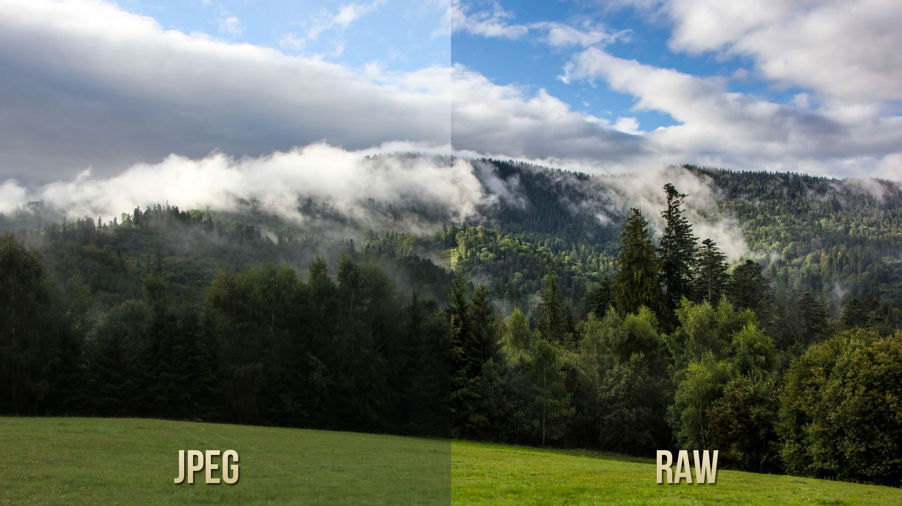
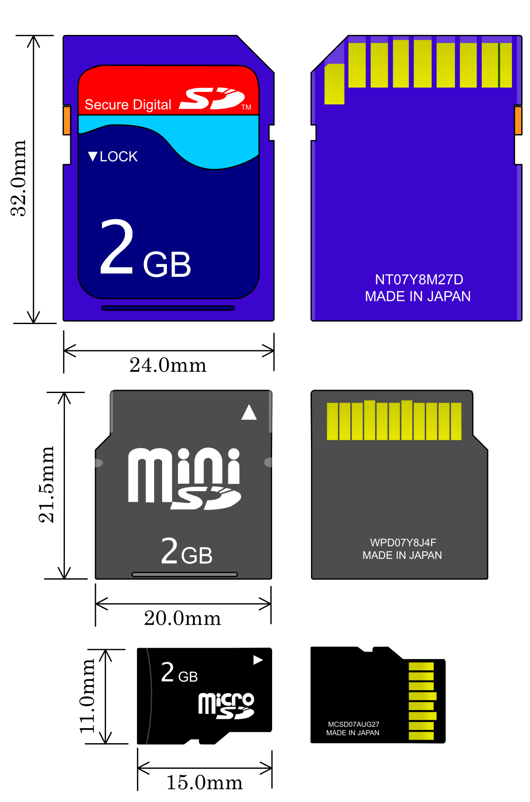

Aproape toate camerele digitale pot procesa imaginea de la senzor într-un fișier JPEG folosind setări pentru balansul de alb, saturația culorii, contrastul și claritatea, care sunt fie selectate automat, fie introduse de fotograf înainte de a realiza fotografia. Camerele care produc fișiere RAW (raw din engleză neprelucrat) salvează aceste setări în fișier, dar amână procesarea. Acest lucru are ca rezultat un pas suplimentar pentru fotograf, deci raw este utilizat în mod normal numai atunci când se intenționează o procesare suplimentară de computer. Cu toate acestea, raw are numeroase avantaje față de JPEG, cum ar fi:
- Mult mai multe nuanțe de culori în comparație cu fișierele JPEG - fișierele neprelucrate au 12 sau 14 biți de informații de intensitate pe canal (4096-16384 nuanțe), comparativ cu 8 biți comprimați gama JPEG (256 de nuanțe).
- Calitate mai mare a imaginii. Deoarece toate calculele (cum ar fi aplicarea corecției gamma, demozaicizarea, balansul de alb, luminozitatea, contrastul etc...) folosite pentru a genera valorile pixelilor (în format RGB pentru majoritatea imaginilor) sunt efectuate într-un singur pas pe datele de bază, rezultatul valorile pixelilor vor fi mai precise și vor prezenta mai puțină posterizare.
- Ocolirea pașilor nedoriți în procesarea camerei, inclusiv ascuțirea și reducerea zgomotului
- Imaginile JPEG sunt de obicei salvate folosind un format de compresie cu pierderi (deși o compresie JPEG fără pierderi este acum disponibilă). Formatele neprelucrate folosesc de obicei compresie fără pierderi sau compresie cu pierderi de înaltă calitate.
- Control mai fin. Software-ul de conversie raw permite utilizatorilor să manipuleze mai mulți parametri (cum ar fi luminozitatea, balansul de alb, nuanța, saturația etc...) și să facă acest lucru cu o variabilitate mai mare. De exemplu, punctul alb poate fi setat la orice valoare, nu doar la valori prestabilite discrete, cum ar fi „lumina de zi” sau „incandescentă”. În plus, utilizatorul poate vedea de obicei o previzualizare în timp ce ajustează acești parametri.
- Spațiul de culoare poate fi setat la orice se dorește.
- Conținutul fișierelor raw include mai multe informații și o calitate potențial mai mare decât rezultatele convertite, în care parametrii de randare sunt fixați, gama de culori este tăiată și pot exista artefacte de cuantizare și compresie.
- Transformările mari ale datelor, cum ar fi creșterea expunerii unei fotografii subexpuse dramatic, au ca rezultat mai puține artefacte vizibile atunci când sunt făcute din date raw decât atunci când sunt făcute din fișiere imagine deja redate.
- Datele brute lasă mai multă posibilitate atât pentru corecții, cât și pentru manipulări artistice, fără a avea ca rezultat imagini cu defecte vizibile, cum ar fi posterizarea.
Dezavantaje
Dimensiunea fișierului raw al camerei este de
obicei de 2-6 ori mai mare decât dimensiunea fișierului JPEG. În timp ce
utilizarea formatelor brute evită artefactele de compresie inerente
JPEG, mai puține imagini pot încăpea pe un anumit card de memorie. Cu
toate acestea, dimensiunile mari și prețurile mici ale cardurilor de
memorie moderne atenuează acest lucru. Fotografierea în modul rafală
tinde să fie mai lentă și mai scurtă din cauza dimensiunii mai mari a
fișierului.Majoritatea formatelor raw implementează compresia fără pierderi a datelor pentru a reduce dimensiunea fișierelor fără a afecta calitatea imaginii. Dar unii folosesc compresia cu pierderi de date unde cuantizarea și filtrarea sunt efectuate pe datele imaginii.
O deosebire dintre formate o puteți vedea în poza de mai jos:

Concluzii: Fotografia trebuie păstrată în original, format raw cum pe vremuri se păstrau peliculele fotografice, iar în caz de necesar se prelucrează fotografia originală într-o copie.
Copierea fotografiilor
Copierea fotografiilor din aparatul de
fotografia se face prin mai multe modalități:
- Cu ajutorul cablului special conectat la portul Usb
-
Cu ajutorul cititorului de carduri de memorie (majoritatea laptopurilor au cititor de carduri SD Card 
- Cu ajutorul canalului de date Wifi sau Bluetooth.
Un mod de citire a cardurilor cu dispozitiv special este prezentat în filmulețul următor: